Inhalt Index DeskTop Bronstein

 Lineare Algebra Eigenwertaufgaben bei Matrizen Spezielles Eigenwertproblem Hauptachsentransformation quadratischer Formen
Lineare Algebra Eigenwertaufgaben bei Matrizen Spezielles Eigenwertproblem Hauptachsentransformation quadratischer Formen


Mit  sei eine beliebige reelle oder komplexe quadratische Matrix vom Typ (n,n) gegeben. Dann gibt es eine nichtsinguläre Matrix 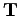, so daß
sei eine beliebige reelle oder komplexe quadratische Matrix vom Typ (n,n) gegeben. Dann gibt es eine nichtsinguläre Matrix 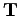, so daß
| 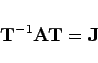 | (4.139) |
gilt, wobei J als JORDAN-Matrix oder JORDANsche Normalform von  bezeichnet wird. Die JORDAN-Matrix hat die Gestalt
bezeichnet wird. Die JORDAN-Matrix hat die Gestalt
| 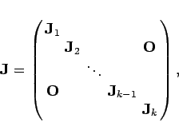 | (4.140) |
wobei die Elemente 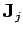 von auch als JORDAN-Kästchen bezeichnet werden. Für deren Form gilt:
1. Sind alle Eigenwerte 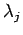 von  einfach, so ist 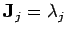 und 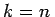, d.h., ist eine Diagonalmatrix der Form
einfach, so ist 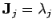 und 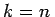, d.h., ist eine Diagonalmatrix der Form
| 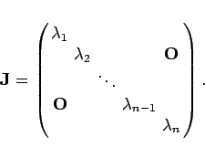 | (4.141) |
2. Ist ein pj-facher Eigenwert von A, so gibt es ein oder mehrere JORDAN-Kästchen der Form
| 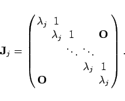 | (4.142) |
Dabei gilt 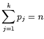. Die Summe der Dimensionen der JORDAN-Kästchen zu einem Eigenwert ist 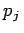. Weitere Informationen zu den JORDAN-Kästchen findet man in Lit. 4.18, 19.16 Bd. 1.